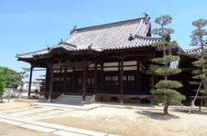

KANRYUJI TEMPLE観龍寺
約1000年前より倉敷市西岡に開院された12の小さなお寺の1つであった北斗山宝積院は、1594年（文禄3年）に現在、観龍寺駐車場の場所に移転されたといわれています。
その後、1624年（寛永元年）には現在の位置に再移転し、このときに現在の宝寿山観龍寺に改名しました。
1744年（延享元年）に2度に渡り消失し、現在の本堂は1749年（寛延2年）に再建されたものです。
観龍寺に鎮守されている妙見堂は、1872年（明治2年）の神仏分離令まで現在、阿智神社がある場所で倉敷村の氏神となっていました。
本堂

2度消失したものの、1749年（寛延2年）に再建された本堂の屋根瓦は、一番古い物で約250年前のものとされています。
妙見堂
観龍寺山門を潜り、右手に鎮守されている妙見堂。中には大きな太鼓が奉納されています。
鐘楼
昭和末に再建され、瓦は特注で様々な紋様が使用されています。この鐘楼から大原美術館を望む景色は隠れた撮影スポットになっています。
潜り門の槍傷
1866年（慶応2年）に長州藩支配下からの脱走兵約100人が倉敷代官所（現在、アイビースクエアの場所）に攻め入った後、休息の場として観龍寺に入った際に出来た槍の傷跡です。
本堂の瓦
 本堂の瓦は一番古いもので約250年前のものといわれています。また丸瓦には、三つ巴や龍謄、菊などの紋が刻まれています。
本堂の瓦は一番古いもので約250年前のものといわれています。また丸瓦には、三つ巴や龍謄、菊などの紋が刻まれています。
一覧に戻る